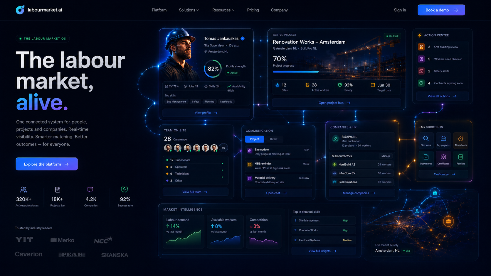
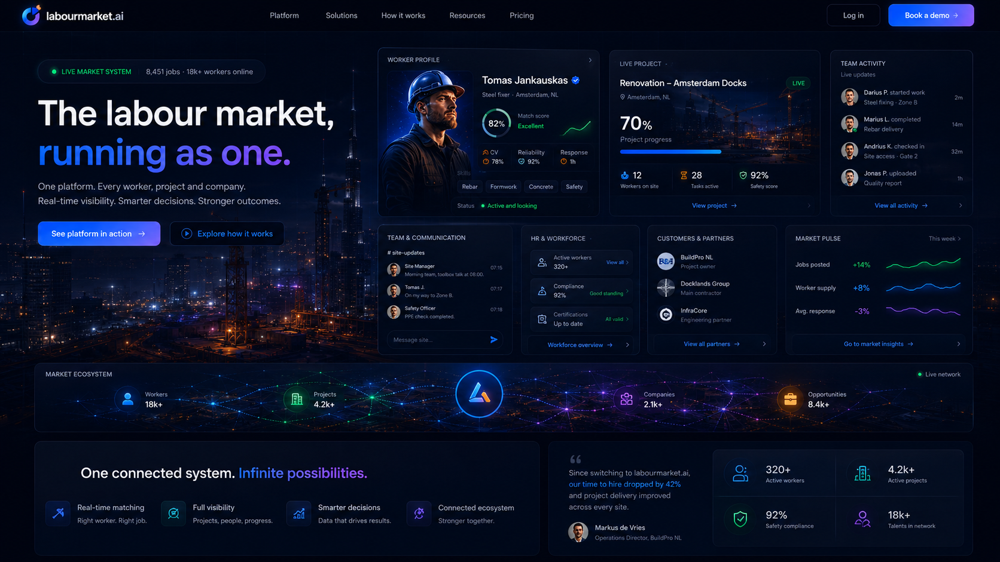
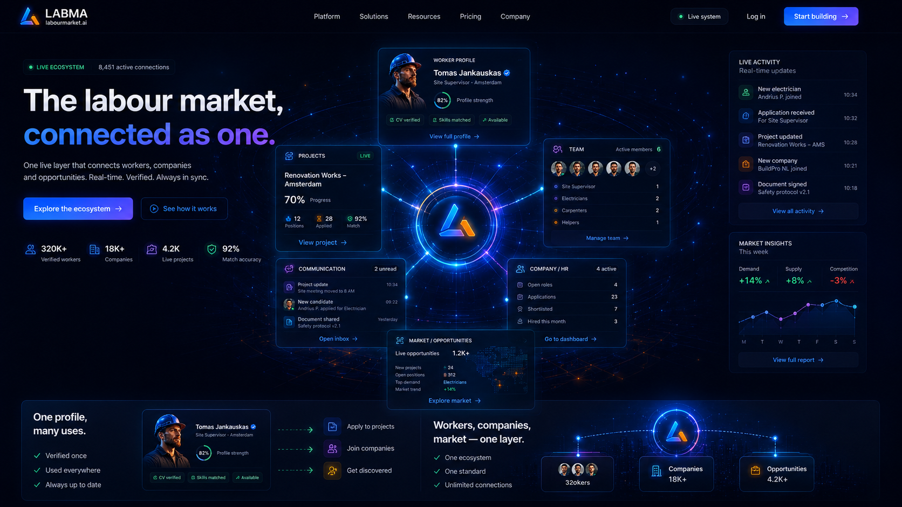
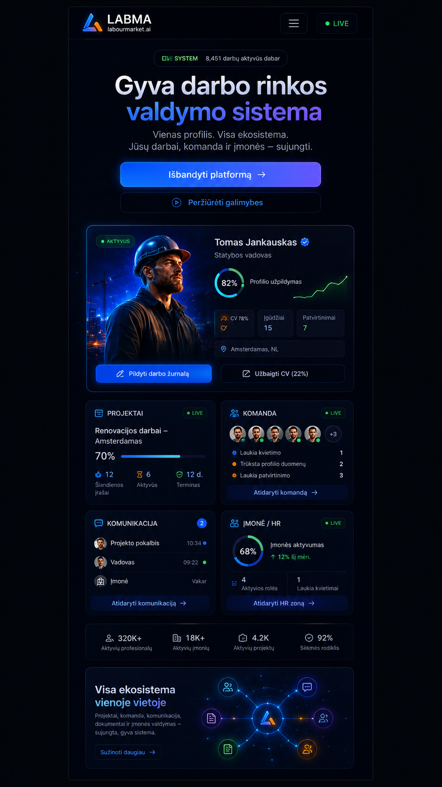

Owner Visual Review — final visual correction v6
Branch / head proof
Repo C:\Users\Mano\Documents\labourmarketai (correct no-dot)
→ github.com/bandymuks1-stack/labourmarketai
Branch feat/labourmarketai-foundation-v1 (PR #1 only)
v6 commit 66b7b4426ce8267cfb7fb996d926c24ca0022760
· prev v4 caad46d
origin/main
5e5998906da9184e892eabd6889488d7d119f831 —
unchanged; dot-path repo not touched
Reference targets used




Result — click for full resolution


What changed (toward the references)
- Reference-style hero: two-column — lean left (eyebrow chip, "The labour market, alive.", one line, primary + light secondary, honest capability ticks) and a dominant right connected command surface, like the living-market-os / command-center references.
- Real product/system presence: dominant worker profile + readiness, an active project module ("Renovation Works", progress), and Team / Communication / Company & HR / Market signals with a connection path and glow — concrete labour-market reality, not an abstract empty halo.
- Alive feeling: halo, scene grid, soft sweep, breathing glow, pulse signals and shimmer connectors (restrained, reduced-motion safe).
- Lean structure: 5 sections, each with a visual anchor; far less text than v3, far more product richness than v4.
- Mobile: compact header, one strong primary, light secondary, a strong first product card, a few compact connected modules, clean rhythm, no horizontal overflow — matches the premium-app reference intent, not a shrunk desktop.
- Honesty: sample surfaces tagged "Product preview / Example"; only the example profile's own readiness is numeric; no fake counts, customers, AI or matching claims (no stock photos — initials avatars).
Review-only. Landing + landing components + token/CSS + review artifacts/
references only. No new routes, no backend, no payment, no fake claims, no
duplicate concepts. No merge · no deploy · no main push · no Vercel
settings change. Guards green (typecheck / lint / check / build) at
commit 66b7b44.